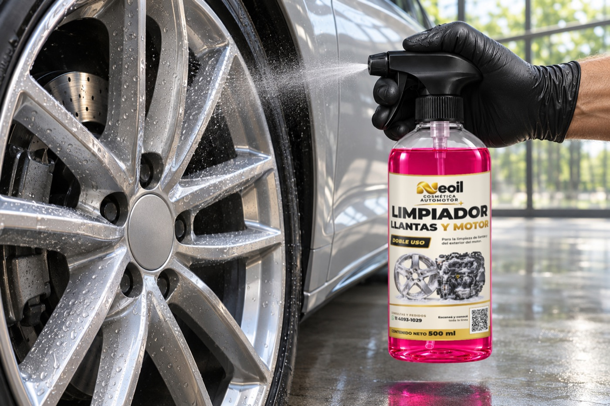
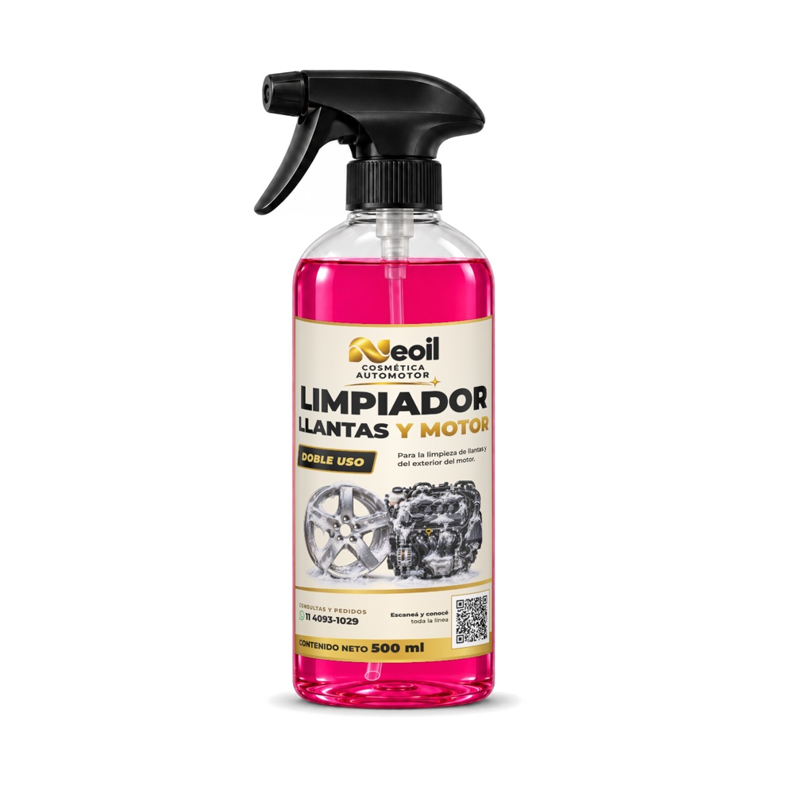

Ruedas y motor
Limpiador de llantas y motor.
Para la limpieza de llantas y del exterior del motor. Un mismo producto para los dos usos.
Contenido neto: 500 ml
Consultar por WhatsApp
Presentación.

Para qué sirve.
- Limpiar llantas.
- Limpiar el exterior del motor.
- Sacar grasa y suciedad adherida.
Cómo se usa.
- Aplicá con la superficie fría.
- Rociá y dejá actuar unos instantes.
- Ayudate con un cepillo si hace falta.
- Enjuagá con abundante agua.